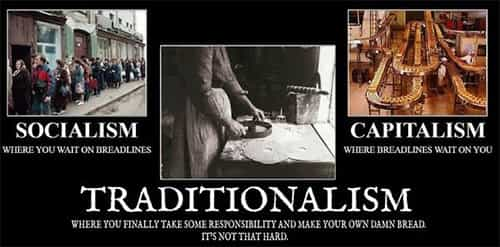

André is a young European who left his decaying country in 2012 for greener pastures. He enjoys exploring subterranean places, reading about a host of interconnected topics, and yearns for Tradition.


C. S. Lewis wrote that “the devil always sends errors into the world in pairs of opposite.” Whether one believes in God or not, one cannot help but notice that clashing dyads tend to work together: their noisy opposition frames further discussion, making people oblivious to subtler and more balanced positions.
Some months ago, one of these pairs of mistakes has been exposed here on Return Of Kings. Some feminists cast an essentially negative view of all heterosexual sex, where men are mostly rapists and women mostly victims, while other feminists claim to be “sex positive” and value sex as an empowering pleasure. Ultimately, both views contribute to the hypersexualization of society and both agree on female autonomy over sex, a point often taken for granted whereas it leads to female domination and the inversion of traditional roles.
Here I would like to dwell in another pair of mistakes, a pair still highly relevant to us, and bound to be so as long as we don’t find at least a consistent third option: capitalism versus socialism.
It is no mystery that the ROK community mostly leans towards capitalism. At first glance, capitalism fosters a spirit of initiative and invention, stimulates entrepreneurship, creates opportunity to thrive professionally as well as a rich market. Isn’t that better than the repressive, politically correct, power-hungry socialism? Well, “the devil relies on your extra dislike of one [error] to draw you gradually into the opposite one”, Lewis added. Ultimately, capitalism and socialism agree on stuff that should be considered as abnormalities, and both are faces of the same modern coin.
Libertarians, the prime defenders of capitalism, constantly say that laws of economics are natural, that supply and demand spontaneously appear everywhere and create a no less spontaneous order if let run their course with minimal rules—non-theft being the most important. From such spontaneity, they conclude that capitalism is “natural” and opposed to “unnatural” efforts that, trying to regulate it, only create friction and further problems.
A lot could be said about the short-handedness of the argument. Suffice it to notice three things.
First, capitalism, “Enlightenment” liberalism and later libertarianism are all based on a matrix of concepts that only sprang up at modern times. The most important ones are a so-called state of nature with fully formed, but isolated and cultureless individuals, who would discover spontaneously that bartering is good; said isolated, cultureless, abstract individuals as the brick and mortar of future societies; or focusing on material needs, on virtues as means for utility, and so on. Actually, all this was made out of a rather reductive and simplified view of the world, and is much less natural or spontaneous than it pretends to be.
Second, the “natural” processes of supply and demand, of bartering, of prices adjustment according to the availability and needs of a given product… were already known in classical antiquity and hence not discovered by the modern authors who were later dubbed “enlightened”. They were simply kept in check by the political power through rulings, numerus clausus, guilds or corporations, as to ensure the harmonious functioning of the city and that everyone had his fair place.
Third, so-called natural laws of economics bear a strange analogy with the universal struggle of living species according to Darwinism. One could argue that this is a proof of the “naturalness” of supply, demand, price adjustment and the likes. Perhaps—but then, the analogy should be made fully and lead us to consider economical systems just like ecosystems, endowed with a need for equilibrium and stability, without which life is conspicuously “nasty, brutish, and short.” Darwin himself felt some dismay at the struggling he was reducing nature to (see Origin of Species, end of chap.3), and his cousin Galton wanted the process of selection to be put at the service of good birth rather than let loose.
The German sociologist Werner Sombart defined capitalism as what happens when money or capital trumps technical expertise or any other consideration. Traditional societies weren’t like that. In the Middle Ages, when the Western world was still living in what can be called a traditional civilization, prices were often regulated by local authorities, and merchants that were taking more than their fair share got expelled, sometimes even seized. Was that a problem? Middle Ages civilization let us magnificent cathedrals that were built for something much higher than profitability—and aside from times of hunger, even the humblest workers could eat lots of meat:
In 1308, the people of Frankfurt (Oder) were eating 100 kilos of beef meat per individual. Men who came to work with the Friars Preachers of Strasbourg received 600-700 grams of meat per day, at a time when multiple decrees explicitly ordered, all over Europe, that hired workers should eat meat products twice a day. At the time of Saint Louis, in the 13th century, more than 8 million pigs were being raised in France; in 1789, only 4 million pigs could be found—although France had become much wider and more populated. In Berlin, at the end of the 14th century, an individual could eat 3 pounds of meat per day, namely 12 times more than a 19th century fabric worker. (Source)
All this was possible because profitability, and economics in general, were deemed much less important then.
The emphasis on employer-employee “free” relationships (outside of family, guilds, and castes), on accumulating capital, on profitability, on capital lending… is as “natural” as excessive greed. It came under various masks through catharism, intriguing families such as the Italian Medici, rogue kings who borrowed money or bought war supplies from Jewish merchants while oppressing their own nobilities, and barely religious bourgeois glad to overthrow the throne and altar so that trade would go unchecked.
Some thinkers, appalled by the philistinism of the bourgeois class or by the harsh life conditions near the steaming factories, started to work on a new answer to these problems. Namely, they would try to reorganize social life from above: the Robert Owens, Saint-Simons and other Charles Fouriers laid the ground Marx and Engels built upon later.
Now I think most readers already know that this kind of answer is usually named socialism and that, honestly, it sucks. Modern socialism means infatuated bureaucrats micromanaging millions of lives, denying citizens their most basic rights to self-determination, destroying opportunities of economic growth out of ignorance or neglect, and pretending to be paragons of altruism when they are mostly parasitic and corrupt.
Yet, is unrestrained capitalism so much better in the long run? People motivated by greed will always want more. They will resort to underhanded practices, speculate ruthlessly, buy out their neighbours’ small companies, support the invasion of new countries in order to open up new commercial outlets. Mafias will crop up, and then oligopolies, and perhaps even monopolies. Global companies will reduce the majority into corporate slavery. Once libertarian bosses will buy up politicians in order to secure their economic rent.
Before you say that this is crony capitalism and “not a free market anymore”, like an erudite libertarian would do, let me answer that an unregulated market is inherently unstable and bound to destruction. Such a market opens the path for hyper-powerful bankers and corporate monsters like Monsanto. People are greedy, self-interested, and some will always go to such lengths—unless societies are regulated by higher principles.
Want more opportunities to invest? Force other countries to open their markets to your capital and lead them to rent money at a high rate. Likewise, once every home features everything a family need and even more, how do you create more economic growth? Simple: destroy the families, so that individuals who were living happily together will need to have their own flats and furniture; feminize men, so that they will consume mindless entertainment and be more obedient; create wars, so that there are more opportunities to sell weapons… All these phenomenons can be boiled down to a soulless search for profit.
In The Bell Curve (chap.22), Charles Murray pointed out that the extended welfare State destroyed healthy small-scale initiatives—such as, say, neighbor fundraising for a little girl with cancer—by replacing them by cold bureaucratic stuff. This is absolutely true, and it should be said that Wall-Mart destroying local shops does the same thing. Here the modern (statist) Left and the neoliberal (market-idolizing) Right concur in destroying normal sociability and atomizing individuals. Is that so much better to be a slave at MacDonald’s than at a public administration? The managerial State, half-Big Corp and half-nanny administration, is merely a fusion of these trends.

To avoid bouncing between Super-Market and Super-State, or worse, the fusion of both, we can break down the problem in a few variables. The first is production, the second motivation, and the third ensuring that the right people at their right place.
The first variable is the most essential from an economical point of view: without goods, there is no economics. Any society needs a decent quantity of several goods to function, or it will go through starvation. It also needs some quality goods or people will experience nasty side effects due to exposure to toxicity, lack of healthy nutriments and so on.
In a capitalistic system, people produce a certain quantity of work in order to sell its product and buy what they need. As the customers’ taste and the drive to innovation produce better products, the theory says, niches appear and some skilled entrepreneurs start focusing on quality products, such as organic food or high-end venues.
In practice, what we’ve seen is the rise of mass production: low-quality products are widely sold, thus producing fat, ugly and chronically ill people who are addicted to junk food and entertainment, whereas quality products are becoming increasingly expensive.
The second variable is motivation: what motives you to work as you do? Do you want to produce quality, to get easy bucks, to maintain a position inside an unstable market? Traditional craftsmen would aim at quality, not because they expected a higher profit, but because they knew quality was good and desirable in itself.
This is a very different mindset than the hunt-for-bucks one. The psychologist Neel Burton (Heaven and Hell, chap.9-10) once said that capitalism was motivated by greed while socialism was motivated by envy: let me remind that both emotions were considered sins, and it may not be an accident that both billionaires and social engineers tend to entertain a God complex. If your work is motivated by a soulless will to power over others, the end result will be ugly.
At last, the third variable consists in ensuring that the right people are at their right place. Socialists say individuals can be at their right place out of equal chances, Murray wrote that “IQ will put you at your place”, and libertarians are faithful that blind free-market processes will. In my opinion, all these bear some truth but are bound to be ultimately wrong.
A socialist State is too riddled with bureaucratic cabals, too disgusting for entrepreneurial minds, and too seething with envy to ensure that a real meritocracy can arise. IQ means innate abilities, but there is no necessity for a high-IQ guy to get a high position, since he can be overburdened by an environment that won’t suit his needs: IQ is merely a predictor, i.e. an indicator with a decent correlation, not an imperious necessity. As for the markets, they are too unstable, too prone to select on differing criteria according to the epoch’s bigger opportunities, and at the end too plutocratic to really ensure people are at their right place.
So, we should want a society where people produce quality stuff without encroaching on the others’ wealth or subsistence out of greed (or envy). A society with better motivations, where jobs are diverse, whose members produce a decent quantity of quality goods. How do we get there? Answering this question can require a break from modern totem poles. At least, I hope I have shown that bouncing endlessly between libertarianism and socialism is without end, and that better options are available.
Read Next: Are We Living In A Dark Age?